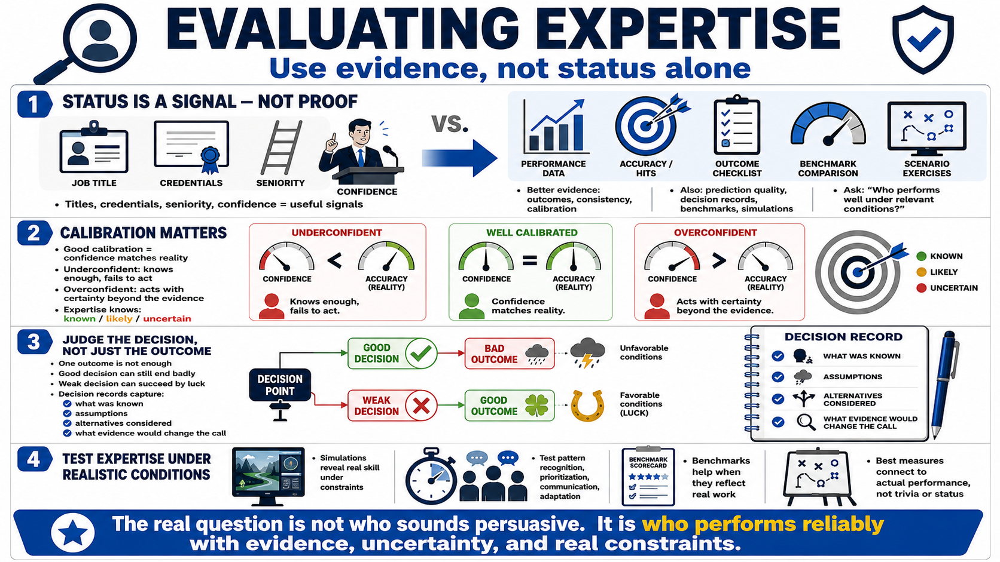

Measuring Expertise and Decision Quality
Connecting to LMS... Progress: in progress

Narration
Expertise should be evaluated with evidence, not status alone. Job titles, credentials, seniority, and confident explanations can all be useful signals, but they do not always prove reliable performance. Better evidence includes outcomes, consistency, calibration, prediction quality, decision records, benchmarks, simulations, and scenario exercises. The question is not simply who sounds persuasive. The question is who performs well under relevant conditions.
Calibration is especially important. A calibrated person has confidence that matches actual likelihood, accuracy, or performance. Poor calibration can appear in two directions. Someone may be underconfident and fail to act when they have useful knowledge. Someone else may be overconfident and act with certainty that the evidence does not support. Expertise includes knowing the difference between what is known, what is likely, and what remains uncertain.
Decision quality is not measured only by whether a single outcome went well. Sometimes a good decision has a bad outcome because conditions were unfavorable. Sometimes a weak decision succeeds because of luck. Decision records help teams examine the reasoning that existed at the time: what was known, what assumptions were made, what alternatives were considered, and what evidence would have changed the decision.
Simulations and scenario exercises can reveal expertise because they place people in realistic constraints without waiting for real consequences. They can test pattern recognition, prioritization, communication, and adaptation. Benchmarks can also help when they reflect the work that matters. The best measurements connect to actual performance, not trivia, status, or the ability to explain a process without applying it.